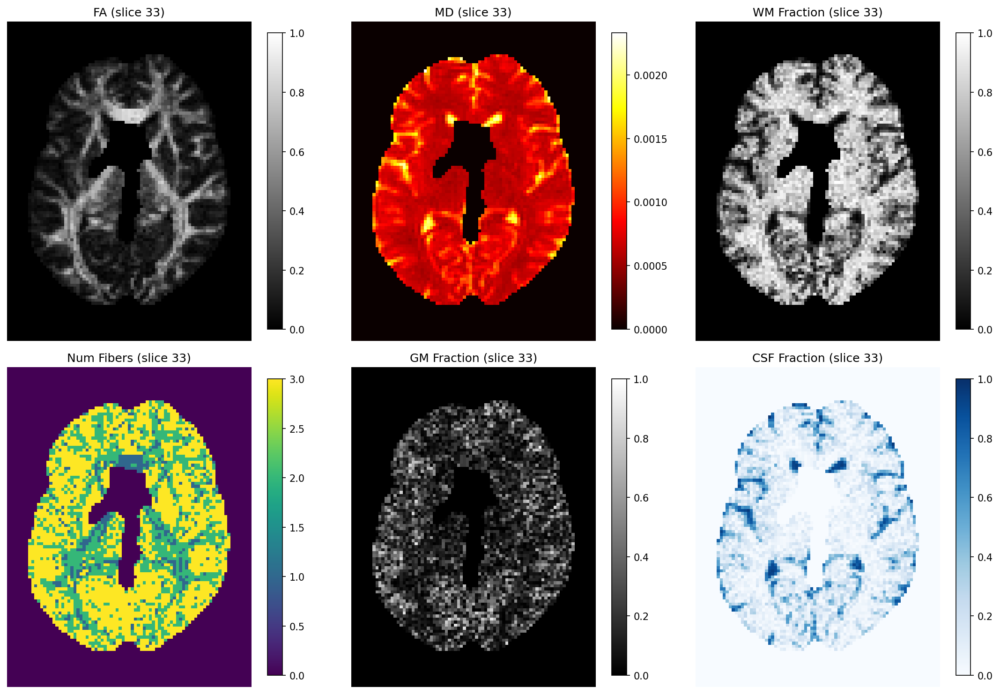

Note
Go to the end to download the full example code.
Reconstruction with FORCE (FORward modeling for Complex microstructure Estimation)#
FORCE [1] is a forward-modeling paradigm that reframes how diffusion MRI data are analyzed. Instead of inverting the measured signal, FORCE simulates a large library of biologically plausible intra-voxel fiber configurations and tissue compositions. It then identifies the best-matching library entry for each voxel by operating directly in signal space.
The key steps are:
Simulate a large library of tissue configurations and their predicted diffusion signals.
Index the library using a fast inner-product search index.
Match each measured voxel signal to its nearest neighbor(s) in the library.
Read off microstructure parameters (FA, MD, WM/GM/CSF fractions, fiber count, dispersion, neurite density, …) from the matched entries.
Because FORCE never fits a parametric model to each voxel independently, it scales gracefully to arbitrary acquisition protocols and can be run in parallel across CPU cores or Ray workers.
Let us start by importing the relevant modules.
import numpy as np
dipy.io handles data loading; dipy.data provides the Stanford HARDI
dataset that ships with DIPY.
from dipy.core.gradients import gradient_table
from dipy.data import get_fnames
from dipy.io.gradients import read_bvals_bvecs
from dipy.io.image import load_nifti, save_nifti
Download (or locate in cache) the Stanford HARDI dataset. The first call fetches ~87 MB from the internet; subsequent calls reuse the local copy.
hardi_fname, hardi_bval_fname, hardi_bvec_fname = get_fnames(name="stanford_hardi")
data, affine = load_nifti(hardi_fname)
bvals, bvecs = read_bvals_bvecs(hardi_bval_fname, hardi_bvec_fname)
gtab = gradient_table(bvals, bvecs=bvecs)
print(f"data shape: {data.shape}")
data shape: (81, 106, 76, 160)
Create a brain mask so that we only fit voxels inside the brain.
from dipy.segment.mask import median_otsu
_, mask = median_otsu(data, vol_idx=range(10, 50), median_radius=3, numpass=1)
print(f"mask shape: {mask.shape}, brain voxels: {mask.sum()}")
mask shape: (81, 106, 76), brain voxels: 154368
Instantiate the FORCE model. At construction time we specify matching
parameters; the simulation library is created separately via generate().
n_neighbors— number of library entries to retrieve per voxel query.use_posterior— whenTrue, parameters are averaged over then_neighborsnearest entries weighted by a softmax posterior; whenFalse(default) only the single best-match entry is used.
from dipy.reconst.force import FORCEModel, force_peaks
model = FORCEModel(
gtab,
n_neighbors=50,
use_posterior=False,
verbose=True,
)
Generate the simulation library. For this tutorial we use a small library (5 000 entries) so that the example completes quickly. In practice, 100 000–500 000 simulations are recommended for production analyses.
When use_cache=True (the default), FORCE stores the generated library in
~/.dipy/force_simulations/ and reloads it automatically on subsequent
runs with identical parameters, skipping regeneration entirely.
model.generate(
num_simulations=500000,
num_cpus=-1,
verbose=True,
use_cache=False,
)
Simulating: 0%| | 0/500000 [00:00<?, ?it/s]
Simulating: 0%| | 1000/500000 [00:02<18:41, 445.10it/s]
Simulating: 1%| | 3000/500000 [00:02<05:20, 1550.59it/s]
Simulating: 1%| | 6000/500000 [00:02<02:19, 3540.81it/s]
Simulating: 2%|▏ | 9000/500000 [00:02<01:27, 5639.07it/s]
Simulating: 2%|▏ | 11000/500000 [00:04<03:06, 2615.34it/s]
Simulating: 3%|▎ | 14000/500000 [00:04<02:08, 3783.14it/s]
Simulating: 4%|▎ | 18000/500000 [00:04<01:22, 5829.95it/s]
Simulating: 4%|▍ | 20000/500000 [00:05<01:12, 6666.36it/s]
Simulating: 4%|▍ | 22000/500000 [00:06<02:27, 3237.96it/s]
Simulating: 5%|▍ | 23000/500000 [00:06<02:20, 3398.40it/s]
Simulating: 6%|▌ | 28000/500000 [00:06<01:13, 6429.09it/s]
Simulating: 6%|▌ | 30000/500000 [00:07<01:05, 7158.38it/s]
Simulating: 6%|▋ | 32000/500000 [00:08<02:23, 3256.18it/s]
Simulating: 7%|▋ | 34000/500000 [00:08<01:52, 4155.52it/s]
Simulating: 7%|▋ | 36000/500000 [00:09<01:33, 4985.60it/s]
Simulating: 8%|▊ | 39000/500000 [00:09<01:11, 6477.74it/s]
Simulating: 8%|▊ | 41000/500000 [00:10<02:24, 3178.75it/s]
Simulating: 8%|▊ | 42000/500000 [00:10<02:11, 3471.16it/s]
Simulating: 9%|▉ | 44000/500000 [00:11<01:38, 4614.89it/s]
Simulating: 9%|▉ | 46000/500000 [00:11<01:19, 5677.45it/s]
Simulating: 10%|█ | 50000/500000 [00:11<00:51, 8821.47it/s]
Simulating: 10%|█ | 52000/500000 [00:13<02:14, 3325.60it/s]
Simulating: 11%|█ | 54000/500000 [00:13<01:45, 4225.56it/s]
Simulating: 11%|█▏ | 57000/500000 [00:13<01:12, 6090.82it/s]
Simulating: 12%|█▏ | 61000/500000 [00:15<02:08, 3406.51it/s]
Simulating: 13%|█▎ | 64000/500000 [00:15<01:34, 4605.55it/s]
Simulating: 13%|█▎ | 67000/500000 [00:15<01:14, 5816.50it/s]
Simulating: 14%|█▍ | 71000/500000 [00:17<02:01, 3544.74it/s]
Simulating: 15%|█▌ | 75000/500000 [00:17<01:24, 5034.68it/s]
Simulating: 15%|█▌ | 77000/500000 [00:17<01:12, 5817.28it/s]
Simulating: 16%|█▌ | 81000/500000 [00:19<01:51, 3757.73it/s]
Simulating: 17%|█▋ | 83000/500000 [00:19<01:35, 4348.23it/s]
Simulating: 17%|█▋ | 87000/500000 [00:19<01:09, 5964.64it/s]
Simulating: 18%|█▊ | 91000/500000 [00:21<01:43, 3951.50it/s]
Simulating: 18%|█▊ | 92000/500000 [00:21<01:42, 3970.87it/s]
Simulating: 19%|█▉ | 96000/500000 [00:22<01:14, 5447.16it/s]
Simulating: 20%|██ | 101000/500000 [00:23<01:32, 4320.11it/s]
Simulating: 20%|██ | 102000/500000 [00:23<01:36, 4143.00it/s]
Simulating: 21%|██ | 104000/500000 [00:24<01:18, 5023.66it/s]
Simulating: 21%|██ | 106000/500000 [00:24<01:06, 5886.08it/s]
Simulating: 22%|██▏ | 109000/500000 [00:24<00:48, 8103.09it/s]
Simulating: 22%|██▏ | 111000/500000 [00:25<01:40, 3878.43it/s]
Simulating: 23%|██▎ | 113000/500000 [00:26<01:35, 4051.14it/s]
Simulating: 23%|██▎ | 116000/500000 [00:26<01:11, 5371.11it/s]
Simulating: 24%|██▎ | 118000/500000 [00:26<00:59, 6454.02it/s]
Simulating: 24%|██▍ | 120000/500000 [00:26<00:53, 7139.50it/s]
Simulating: 24%|██▍ | 122000/500000 [00:28<01:49, 3455.66it/s]
Simulating: 25%|██▍ | 123000/500000 [00:28<01:45, 3566.27it/s]
Simulating: 25%|██▍ | 124000/500000 [00:28<01:34, 3984.70it/s]
Simulating: 26%|██▌ | 128000/500000 [00:28<00:49, 7472.39it/s]
Simulating: 26%|██▌ | 130000/500000 [00:28<00:52, 7007.08it/s]
Simulating: 26%|██▋ | 132000/500000 [00:30<01:46, 3451.83it/s]
Simulating: 27%|██▋ | 133000/500000 [00:30<01:42, 3575.68it/s]
Simulating: 27%|██▋ | 134000/500000 [00:30<01:38, 3718.26it/s]
Simulating: 27%|██▋ | 136000/500000 [00:30<01:10, 5199.35it/s]
Simulating: 28%|██▊ | 139000/500000 [00:30<00:49, 7302.90it/s]
Simulating: 28%|██▊ | 141000/500000 [00:32<01:40, 3571.71it/s]
Simulating: 29%|██▊ | 143000/500000 [00:32<01:27, 4072.35it/s]
Simulating: 29%|██▉ | 144000/500000 [00:32<01:27, 4060.13it/s]
Simulating: 29%|██▉ | 146000/500000 [00:32<01:04, 5447.35it/s]
Simulating: 30%|██▉ | 148000/500000 [00:33<00:54, 6507.88it/s]
Simulating: 30%|███ | 150000/500000 [00:33<00:59, 5901.65it/s]
Simulating: 30%|███ | 151000/500000 [00:34<01:54, 3045.04it/s]
Simulating: 31%|███ | 154000/500000 [00:35<01:29, 3854.20it/s]
Simulating: 31%|███ | 156000/500000 [00:35<01:12, 4753.10it/s]
Simulating: 32%|███▏ | 158000/500000 [00:35<00:56, 6075.09it/s]
Simulating: 32%|███▏ | 160000/500000 [00:35<00:54, 6291.27it/s]
Simulating: 32%|███▏ | 161000/500000 [00:36<01:45, 3221.47it/s]
Simulating: 33%|███▎ | 164000/500000 [00:37<01:21, 4121.31it/s]
Simulating: 33%|███▎ | 166000/500000 [00:37<01:05, 5079.73it/s]
Simulating: 33%|███▎ | 167000/500000 [00:37<01:00, 5471.44it/s]
Simulating: 34%|███▍ | 169000/500000 [00:37<00:48, 6851.41it/s]
Simulating: 34%|███▍ | 171000/500000 [00:38<01:34, 3493.72it/s]
Simulating: 35%|███▍ | 174000/500000 [00:39<01:16, 4270.46it/s]
Simulating: 35%|███▌ | 177000/500000 [00:39<00:57, 5608.89it/s]
Simulating: 36%|███▌ | 179000/500000 [00:39<00:48, 6641.50it/s]
Simulating: 36%|███▌ | 181000/500000 [00:40<01:26, 3679.40it/s]
Simulating: 36%|███▋ | 182000/500000 [00:40<01:18, 4034.91it/s]
Simulating: 37%|███▋ | 184000/500000 [00:41<01:16, 4123.37it/s]
Simulating: 38%|███▊ | 188000/500000 [00:41<00:48, 6403.80it/s]
Simulating: 38%|███▊ | 189000/500000 [00:41<00:56, 5515.04it/s]
Simulating: 38%|███▊ | 191000/500000 [00:42<01:15, 4066.76it/s]
Simulating: 38%|███▊ | 192000/500000 [00:43<01:18, 3902.78it/s]
Simulating: 39%|███▊ | 193000/500000 [00:43<01:10, 4340.28it/s]
Simulating: 39%|███▉ | 194000/500000 [00:43<01:19, 3854.57it/s]
Simulating: 39%|███▉ | 196000/500000 [00:43<00:55, 5520.40it/s]
Simulating: 40%|███▉ | 198000/500000 [00:43<00:46, 6516.30it/s]
Simulating: 40%|███▉ | 199000/500000 [00:44<00:48, 6265.91it/s]
Simulating: 40%|████ | 201000/500000 [00:44<01:03, 4739.47it/s]
Simulating: 40%|████ | 202000/500000 [00:45<01:17, 3839.90it/s]
Simulating: 41%|████ | 203000/500000 [00:45<01:13, 4042.56it/s]
Simulating: 41%|████ | 204000/500000 [00:45<01:15, 3931.35it/s]
Simulating: 41%|████ | 205000/500000 [00:45<01:09, 4260.15it/s]
Simulating: 42%|████▏ | 208000/500000 [00:45<00:44, 6496.63it/s]
Simulating: 42%|████▏ | 211000/500000 [00:46<00:49, 5789.02it/s]
Simulating: 42%|████▏ | 212000/500000 [00:47<01:05, 4412.52it/s]
Simulating: 43%|████▎ | 213000/500000 [00:47<01:06, 4326.96it/s]
Simulating: 43%|████▎ | 214000/500000 [00:47<01:08, 4177.02it/s]
Simulating: 43%|████▎ | 215000/500000 [00:47<01:02, 4533.18it/s]
Simulating: 43%|████▎ | 217000/500000 [00:47<00:46, 6130.16it/s]
Simulating: 44%|████▍ | 219000/500000 [00:48<00:37, 7395.38it/s]
Simulating: 44%|████▍ | 221000/500000 [00:48<00:49, 5635.42it/s]
Simulating: 44%|████▍ | 222000/500000 [00:49<01:13, 3761.87it/s]
Simulating: 45%|████▍ | 223000/500000 [00:49<01:22, 3375.88it/s]
Simulating: 45%|████▍ | 224000/500000 [00:49<01:13, 3740.95it/s]
Simulating: 45%|████▌ | 226000/500000 [00:49<00:52, 5233.66it/s]
Simulating: 45%|████▌ | 227000/500000 [00:50<00:51, 5287.20it/s]
Simulating: 46%|████▌ | 230000/500000 [00:50<00:34, 7784.43it/s]
Simulating: 46%|████▌ | 231000/500000 [00:50<00:43, 6235.81it/s]
Simulating: 46%|████▋ | 232000/500000 [00:51<01:06, 4035.77it/s]
Simulating: 47%|████▋ | 233000/500000 [00:51<01:38, 2707.65it/s]
Simulating: 47%|████▋ | 236000/500000 [00:52<00:56, 4707.29it/s]
Simulating: 47%|████▋ | 237000/500000 [00:52<00:52, 4983.75it/s]
Simulating: 48%|████▊ | 240000/500000 [00:52<00:36, 7133.88it/s]
Simulating: 48%|████▊ | 242000/500000 [00:53<01:01, 4181.48it/s]
Simulating: 49%|████▊ | 243000/500000 [00:54<01:20, 3209.29it/s]
Simulating: 49%|████▉ | 244000/500000 [00:54<01:09, 3707.19it/s]
Simulating: 49%|████▉ | 247000/500000 [00:54<00:46, 5418.92it/s]
Simulating: 50%|█████ | 250000/500000 [00:54<00:33, 7465.21it/s]
Simulating: 50%|█████ | 252000/500000 [00:55<00:51, 4843.85it/s]
Simulating: 51%|█████ | 253000/500000 [00:56<01:10, 3486.95it/s]
Simulating: 51%|█████ | 254000/500000 [00:56<01:08, 3613.21it/s]
Simulating: 51%|█████ | 256000/500000 [00:56<00:51, 4771.55it/s]
Simulating: 52%|█████▏ | 259000/500000 [00:56<00:32, 7389.92it/s]
Simulating: 52%|█████▏ | 261000/500000 [00:57<00:49, 4784.67it/s]
Simulating: 53%|█████▎ | 263000/500000 [00:58<01:01, 3884.76it/s]
Simulating: 53%|█████▎ | 264000/500000 [00:58<00:58, 4047.77it/s]
Simulating: 53%|█████▎ | 265000/500000 [00:58<00:53, 4360.82it/s]
Simulating: 53%|█████▎ | 266000/500000 [00:58<00:48, 4844.18it/s]
Simulating: 54%|█████▍ | 270000/500000 [00:59<00:33, 6813.49it/s]
Simulating: 54%|█████▍ | 271000/500000 [00:59<00:46, 4893.55it/s]
Simulating: 54%|█████▍ | 272000/500000 [00:59<00:46, 4909.83it/s]
Simulating: 55%|█████▍ | 273000/500000 [01:00<00:58, 3885.70it/s]
Simulating: 55%|█████▍ | 274000/500000 [01:00<01:02, 3614.28it/s]
Simulating: 55%|█████▌ | 275000/500000 [01:00<00:52, 4285.48it/s]
Simulating: 55%|█████▌ | 276000/500000 [01:00<00:44, 5012.59it/s]
Simulating: 55%|█████▌ | 277000/500000 [01:00<00:38, 5744.69it/s]
Simulating: 56%|█████▌ | 280000/500000 [01:01<00:30, 7292.19it/s]
Simulating: 56%|█████▌ | 281000/500000 [01:01<00:40, 5370.01it/s]
Simulating: 56%|█████▋ | 282000/500000 [01:01<00:50, 4356.22it/s]
Simulating: 57%|█████▋ | 283000/500000 [01:02<01:10, 3078.56it/s]
Simulating: 57%|█████▋ | 284000/500000 [01:02<00:57, 3732.24it/s]
Simulating: 57%|█████▋ | 287000/500000 [01:02<00:33, 6297.38it/s]
Simulating: 58%|█████▊ | 288000/500000 [01:02<00:34, 6176.33it/s]
Simulating: 58%|█████▊ | 290000/500000 [01:03<00:27, 7706.12it/s]
Simulating: 58%|█████▊ | 291000/500000 [01:03<00:34, 6077.08it/s]
Simulating: 58%|█████▊ | 292000/500000 [01:03<00:50, 4079.47it/s]
Simulating: 59%|█████▊ | 293000/500000 [01:04<01:13, 2828.78it/s]
Simulating: 59%|█████▉ | 294000/500000 [01:04<00:59, 3473.22it/s]
Simulating: 59%|█████▉ | 297000/500000 [01:04<00:34, 5866.28it/s]
Simulating: 60%|█████▉ | 298000/500000 [01:05<00:38, 5210.92it/s]
Simulating: 60%|██████ | 301000/500000 [01:05<00:32, 6205.91it/s]
Simulating: 60%|██████ | 302000/500000 [01:06<00:47, 4150.71it/s]
Simulating: 61%|██████ | 303000/500000 [01:06<00:52, 3750.53it/s]
Simulating: 61%|██████ | 304000/500000 [01:06<00:52, 3702.77it/s]
Simulating: 62%|██████▏ | 308000/500000 [01:07<00:33, 5780.48it/s]
Simulating: 62%|██████▏ | 309000/500000 [01:07<00:32, 5856.86it/s]
Simulating: 62%|██████▏ | 310000/500000 [01:07<00:30, 6308.26it/s]
Simulating: 62%|██████▏ | 311000/500000 [01:08<00:49, 3854.01it/s]
Simulating: 63%|██████▎ | 313000/500000 [01:08<00:50, 3711.55it/s]
Simulating: 63%|██████▎ | 314000/500000 [01:08<00:43, 4231.97it/s]
Simulating: 63%|██████▎ | 315000/500000 [01:08<00:41, 4409.52it/s]
Simulating: 63%|██████▎ | 317000/500000 [01:09<00:29, 6247.61it/s]
Simulating: 64%|██████▎ | 318000/500000 [01:09<00:31, 5743.54it/s]
Simulating: 64%|██████▍ | 320000/500000 [01:09<00:24, 7364.04it/s]
Simulating: 64%|██████▍ | 321000/500000 [01:10<00:45, 3947.01it/s]
Simulating: 65%|██████▍ | 323000/500000 [01:10<00:48, 3632.34it/s]
Simulating: 65%|██████▍ | 324000/500000 [01:10<00:44, 3986.65it/s]
Simulating: 65%|██████▌ | 327000/500000 [01:11<00:30, 5657.72it/s]
Simulating: 66%|██████▌ | 328000/500000 [01:11<00:34, 5049.58it/s]
Simulating: 66%|██████▌ | 331000/500000 [01:12<00:37, 4488.84it/s]
Simulating: 67%|██████▋ | 333000/500000 [01:12<00:38, 4381.32it/s]
Simulating: 67%|██████▋ | 334000/500000 [01:13<00:39, 4198.64it/s]
Simulating: 67%|██████▋ | 335000/500000 [01:13<00:35, 4686.94it/s]
Simulating: 68%|██████▊ | 338000/500000 [01:13<00:29, 5489.60it/s]
Simulating: 68%|██████▊ | 341000/500000 [01:14<00:32, 4963.36it/s]
Simulating: 68%|██████▊ | 342000/500000 [01:14<00:29, 5267.96it/s]
Simulating: 69%|██████▊ | 343000/500000 [01:14<00:32, 4830.26it/s]
Simulating: 69%|██████▉ | 344000/500000 [01:15<00:36, 4217.02it/s]
Simulating: 69%|██████▉ | 345000/500000 [01:15<00:35, 4421.28it/s]
Simulating: 69%|██████▉ | 346000/500000 [01:15<00:31, 4940.72it/s]
Simulating: 70%|██████▉ | 348000/500000 [01:15<00:28, 5395.20it/s]
Simulating: 70%|██████▉ | 349000/500000 [01:15<00:25, 6020.05it/s]
Simulating: 70%|███████ | 350000/500000 [01:15<00:23, 6383.60it/s]
Simulating: 70%|███████ | 351000/500000 [01:16<00:37, 4012.70it/s]
Simulating: 71%|███████ | 353000/500000 [01:16<00:32, 4493.97it/s]
Simulating: 71%|███████ | 354000/500000 [01:16<00:30, 4747.46it/s]
Simulating: 71%|███████ | 355000/500000 [01:17<00:44, 3294.85it/s]
Simulating: 72%|███████▏ | 358000/500000 [01:17<00:28, 5000.25it/s]
Simulating: 72%|███████▏ | 359000/500000 [01:17<00:26, 5415.44it/s]
Simulating: 72%|███████▏ | 361000/500000 [01:18<00:27, 5101.88it/s]
Simulating: 73%|███████▎ | 363000/500000 [01:18<00:28, 4824.88it/s]
Simulating: 73%|███████▎ | 364000/500000 [01:19<00:28, 4848.55it/s]
Simulating: 73%|███████▎ | 365000/500000 [01:19<00:38, 3544.12it/s]
Simulating: 74%|███████▎ | 368000/500000 [01:19<00:25, 5224.38it/s]
Simulating: 74%|███████▍ | 369000/500000 [01:20<00:23, 5541.79it/s]
Simulating: 74%|███████▍ | 370000/500000 [01:20<00:22, 5656.58it/s]
Simulating: 74%|███████▍ | 371000/500000 [01:20<00:20, 6282.66it/s]
Simulating: 74%|███████▍ | 372000/500000 [01:20<00:20, 6240.15it/s]
Simulating: 75%|███████▍ | 373000/500000 [01:20<00:27, 4680.09it/s]
Simulating: 75%|███████▍ | 374000/500000 [01:21<00:25, 4920.93it/s]
Simulating: 75%|███████▌ | 375000/500000 [01:21<00:45, 2775.55it/s]
Simulating: 75%|███████▌ | 376000/500000 [01:21<00:35, 3463.97it/s]
Simulating: 76%|███████▌ | 378000/500000 [01:22<00:25, 4740.38it/s]
Simulating: 76%|███████▌ | 379000/500000 [01:22<00:22, 5320.15it/s]
Simulating: 76%|███████▌ | 380000/500000 [01:22<00:23, 5178.92it/s]
Simulating: 76%|███████▌ | 381000/500000 [01:22<00:21, 5507.99it/s]
Simulating: 77%|███████▋ | 383000/500000 [01:23<00:23, 4904.31it/s]
Simulating: 77%|███████▋ | 385000/500000 [01:23<00:31, 3637.80it/s]
Simulating: 77%|███████▋ | 386000/500000 [01:24<00:28, 3964.97it/s]
Simulating: 78%|███████▊ | 388000/500000 [01:24<00:23, 4757.64it/s]
Simulating: 78%|███████▊ | 389000/500000 [01:24<00:21, 5099.00it/s]
Simulating: 78%|███████▊ | 391000/500000 [01:24<00:17, 6229.37it/s]
Simulating: 78%|███████▊ | 392000/500000 [01:24<00:17, 6043.27it/s]
Simulating: 79%|███████▊ | 393000/500000 [01:25<00:18, 5686.80it/s]
Simulating: 79%|███████▉ | 395000/500000 [01:25<00:29, 3583.22it/s]
Simulating: 79%|███████▉ | 396000/500000 [01:26<00:27, 3720.00it/s]
Simulating: 79%|███████▉ | 397000/500000 [01:26<00:23, 4299.93it/s]
Simulating: 80%|███████▉ | 399000/500000 [01:26<00:21, 4783.64it/s]
Simulating: 80%|████████ | 401000/500000 [01:26<00:19, 5128.65it/s]
Simulating: 80%|████████ | 402000/500000 [01:27<00:18, 5339.99it/s]
Simulating: 81%|████████ | 404000/500000 [01:27<00:13, 7228.88it/s]
Simulating: 81%|████████ | 405000/500000 [01:27<00:25, 3678.65it/s]
Simulating: 81%|████████ | 406000/500000 [01:28<00:28, 3294.04it/s]
Simulating: 82%|████████▏ | 408000/500000 [01:28<00:20, 4571.78it/s]
Simulating: 82%|████████▏ | 409000/500000 [01:28<00:19, 4592.96it/s]
Simulating: 82%|████████▏ | 410000/500000 [01:28<00:18, 4923.59it/s]
Simulating: 82%|████████▏ | 411000/500000 [01:29<00:19, 4633.45it/s]
Simulating: 83%|████████▎ | 414000/500000 [01:29<00:14, 6120.35it/s]
Simulating: 83%|████████▎ | 415000/500000 [01:29<00:17, 4907.28it/s]
Simulating: 83%|████████▎ | 416000/500000 [01:30<00:23, 3628.99it/s]
Simulating: 84%|████████▎ | 418000/500000 [01:30<00:20, 3959.88it/s]
Simulating: 84%|████████▍ | 419000/500000 [01:31<00:18, 4479.39it/s]
Simulating: 84%|████████▍ | 420000/500000 [01:31<00:15, 5036.62it/s]
Simulating: 84%|████████▍ | 421000/500000 [01:31<00:15, 5075.83it/s]
Simulating: 85%|████████▍ | 424000/500000 [01:31<00:09, 8026.59it/s]
Simulating: 85%|████████▌ | 425000/500000 [01:31<00:14, 5349.60it/s]
Simulating: 85%|████████▌ | 426000/500000 [01:32<00:19, 3857.43it/s]
Simulating: 85%|████████▌ | 427000/500000 [01:32<00:16, 4453.14it/s]
Simulating: 86%|████████▌ | 428000/500000 [01:32<00:16, 4340.86it/s]
Simulating: 86%|████████▌ | 429000/500000 [01:32<00:15, 4660.44it/s]
Simulating: 86%|████████▌ | 430000/500000 [01:33<00:14, 4754.00it/s]
Simulating: 86%|████████▌ | 431000/500000 [01:33<00:12, 5469.21it/s]
Simulating: 86%|████████▋ | 432000/500000 [01:33<00:11, 6016.95it/s]
Simulating: 87%|████████▋ | 434000/500000 [01:33<00:07, 8575.80it/s]
Simulating: 87%|████████▋ | 436000/500000 [01:34<00:17, 3713.48it/s]
Simulating: 87%|████████▋ | 437000/500000 [01:34<00:15, 3940.48it/s]
Simulating: 88%|████████▊ | 438000/500000 [01:34<00:14, 4208.78it/s]
Simulating: 88%|████████▊ | 439000/500000 [01:35<00:13, 4687.11it/s]
Simulating: 88%|████████▊ | 441000/500000 [01:35<00:10, 5511.29it/s]
Simulating: 89%|████████▊ | 443000/500000 [01:35<00:08, 6839.93it/s]
Simulating: 89%|████████▉ | 444000/500000 [01:35<00:09, 5989.09it/s]
Simulating: 89%|████████▉ | 445000/500000 [01:35<00:09, 5639.30it/s]
Simulating: 89%|████████▉ | 446000/500000 [01:36<00:14, 3714.70it/s]
Simulating: 89%|████████▉ | 447000/500000 [01:36<00:16, 3302.54it/s]
Simulating: 90%|████████▉ | 448000/500000 [01:37<00:13, 3852.81it/s]
Simulating: 90%|█████████ | 450000/500000 [01:37<00:10, 4821.27it/s]
Simulating: 90%|█████████ | 451000/500000 [01:37<00:10, 4690.24it/s]
Simulating: 91%|█████████ | 453000/500000 [01:37<00:07, 6030.80it/s]
Simulating: 91%|█████████ | 455000/500000 [01:38<00:07, 6116.99it/s]
Simulating: 91%|█████████ | 456000/500000 [01:38<00:11, 3862.29it/s]
Simulating: 91%|█████████▏| 457000/500000 [01:39<00:11, 3636.52it/s]
Simulating: 92%|█████████▏| 458000/500000 [01:39<00:10, 4062.33it/s]
Simulating: 92%|█████████▏| 460000/500000 [01:39<00:08, 4852.03it/s]
Simulating: 92%|█████████▏| 461000/500000 [01:39<00:09, 4009.03it/s]
Simulating: 93%|█████████▎| 464000/500000 [01:40<00:06, 5990.73it/s]
Simulating: 93%|█████████▎| 466000/500000 [01:40<00:07, 4369.79it/s]
Simulating: 93%|█████████▎| 467000/500000 [01:41<00:08, 4092.54it/s]
Simulating: 94%|█████████▎| 468000/500000 [01:41<00:07, 4546.99it/s]
Simulating: 94%|█████████▍| 470000/500000 [01:41<00:05, 5123.67it/s]
Simulating: 94%|█████████▍| 471000/500000 [01:41<00:06, 4230.76it/s]
Simulating: 95%|█████████▍| 474000/500000 [01:42<00:03, 6540.62it/s]
Simulating: 95%|█████████▌| 475000/500000 [01:42<00:04, 6173.40it/s]
Simulating: 95%|█████████▌| 476000/500000 [01:43<00:06, 3747.09it/s]
Simulating: 95%|█████████▌| 477000/500000 [01:43<00:05, 4189.48it/s]
Simulating: 96%|█████████▌| 479000/500000 [01:43<00:04, 4687.16it/s]
Simulating: 96%|█████████▌| 480000/500000 [01:43<00:04, 4480.76it/s]
Simulating: 96%|█████████▌| 481000/500000 [01:44<00:04, 4006.18it/s]
Simulating: 96%|█████████▋| 482000/500000 [01:44<00:03, 4610.33it/s]
Simulating: 97%|█████████▋| 484000/500000 [01:44<00:02, 6706.20it/s]
Simulating: 97%|█████████▋| 485000/500000 [01:44<00:02, 6023.07it/s]
Simulating: 97%|█████████▋| 486000/500000 [01:45<00:03, 3890.01it/s]
Simulating: 97%|█████████▋| 487000/500000 [01:45<00:02, 4484.78it/s]
Simulating: 98%|█████████▊| 489000/500000 [01:45<00:03, 3476.77it/s]
Simulating: 98%|█████████▊| 491000/500000 [01:46<00:02, 4283.84it/s]
Simulating: 99%|█████████▉| 495000/500000 [01:46<00:00, 6900.38it/s]
Simulating: 99%|█████████▉| 496000/500000 [01:46<00:00, 5187.50it/s]
Simulating: 99%|█████████▉| 497000/500000 [01:47<00:00, 5602.50it/s]
Simulating: 100%|█████████▉| 499000/500000 [01:47<00:00, 4163.46it/s]
Simulating: 100%|██████████| 500000/500000 [01:47<00:00, 4640.81it/s]
Simulating: 100%|██████████| 500000/500000 [01:48<00:00, 4627.61it/s]
DTI fitting: 0%| | 0/500000 [00:00<?, ?it/s]
DTI fitting: 1%| | 4000/500000 [00:00<00:15, 31838.28it/s]
DTI fitting: 2%|▏ | 8000/500000 [00:00<00:15, 32561.25it/s]
DTI fitting: 2%|▏ | 12000/500000 [00:00<00:15, 32048.12it/s]
DTI fitting: 3%|▎ | 16000/500000 [00:00<00:15, 32099.53it/s]
DTI fitting: 4%|▍ | 20000/500000 [00:00<00:14, 32593.80it/s]
DTI fitting: 5%|▍ | 24000/500000 [00:00<00:14, 32943.04it/s]
DTI fitting: 6%|▌ | 28000/500000 [00:00<00:14, 33009.86it/s]
DTI fitting: 6%|▋ | 32000/500000 [00:00<00:14, 33047.17it/s]
DTI fitting: 7%|▋ | 36000/500000 [00:01<00:14, 32957.55it/s]
DTI fitting: 8%|▊ | 40000/500000 [00:01<00:13, 32922.14it/s]
DTI fitting: 9%|▉ | 44000/500000 [00:01<00:13, 33087.72it/s]
DTI fitting: 10%|▉ | 48000/500000 [00:01<00:13, 33138.59it/s]
DTI fitting: 10%|█ | 52000/500000 [00:01<00:13, 33272.96it/s]
DTI fitting: 11%|█ | 56000/500000 [00:01<00:13, 33393.74it/s]
DTI fitting: 12%|█▏ | 60000/500000 [00:01<00:13, 33635.97it/s]
DTI fitting: 13%|█▎ | 64000/500000 [00:01<00:12, 33627.91it/s]
DTI fitting: 14%|█▎ | 68000/500000 [00:02<00:12, 33425.43it/s]
DTI fitting: 14%|█▍ | 72000/500000 [00:02<00:12, 32953.62it/s]
DTI fitting: 15%|█▌ | 76000/500000 [00:02<00:12, 33062.91it/s]
DTI fitting: 16%|█▌ | 80000/500000 [00:02<00:12, 32920.31it/s]
DTI fitting: 17%|█▋ | 84000/500000 [00:02<00:12, 32950.30it/s]
DTI fitting: 18%|█▊ | 88000/500000 [00:02<00:12, 33156.61it/s]
DTI fitting: 18%|█▊ | 92000/500000 [00:02<00:12, 33214.92it/s]
DTI fitting: 19%|█▉ | 96000/500000 [00:02<00:12, 33278.59it/s]
DTI fitting: 20%|██ | 100000/500000 [00:03<00:12, 33311.49it/s]
DTI fitting: 21%|██ | 104000/500000 [00:03<00:11, 33310.55it/s]
DTI fitting: 22%|██▏ | 108000/500000 [00:03<00:11, 33372.27it/s]
DTI fitting: 22%|██▏ | 112000/500000 [00:03<00:11, 33592.05it/s]
DTI fitting: 23%|██▎ | 116000/500000 [00:03<00:11, 33767.03it/s]
DTI fitting: 24%|██▍ | 120000/500000 [00:03<00:11, 33954.73it/s]
DTI fitting: 25%|██▍ | 124000/500000 [00:03<00:11, 34162.14it/s]
DTI fitting: 26%|██▌ | 128000/500000 [00:03<00:10, 34273.18it/s]
DTI fitting: 26%|██▋ | 132000/500000 [00:03<00:10, 34126.39it/s]
DTI fitting: 27%|██▋ | 136000/500000 [00:04<00:10, 33877.81it/s]
DTI fitting: 28%|██▊ | 140000/500000 [00:04<00:10, 33608.52it/s]
DTI fitting: 29%|██▉ | 144000/500000 [00:04<00:10, 33436.04it/s]
DTI fitting: 30%|██▉ | 148000/500000 [00:04<00:10, 33444.53it/s]
DTI fitting: 30%|███ | 152000/500000 [00:04<00:10, 33147.52it/s]
DTI fitting: 31%|███ | 156000/500000 [00:04<00:10, 33263.27it/s]
DTI fitting: 32%|███▏ | 160000/500000 [00:04<00:10, 33408.36it/s]
DTI fitting: 33%|███▎ | 164000/500000 [00:04<00:10, 33597.81it/s]
DTI fitting: 34%|███▎ | 168000/500000 [00:05<00:09, 33681.88it/s]
DTI fitting: 34%|███▍ | 172000/500000 [00:05<00:09, 33649.86it/s]
DTI fitting: 35%|███▌ | 176000/500000 [00:05<00:09, 33654.64it/s]
DTI fitting: 36%|███▌ | 180000/500000 [00:05<00:09, 33687.24it/s]
DTI fitting: 37%|███▋ | 184000/500000 [00:05<00:09, 33806.51it/s]
DTI fitting: 38%|███▊ | 188000/500000 [00:05<00:09, 33975.12it/s]
DTI fitting: 38%|███▊ | 192000/500000 [00:05<00:09, 34175.60it/s]
DTI fitting: 39%|███▉ | 196000/500000 [00:05<00:08, 34219.41it/s]
DTI fitting: 40%|████ | 200000/500000 [00:05<00:08, 34105.94it/s]
DTI fitting: 41%|████ | 204000/500000 [00:06<00:08, 33781.25it/s]
DTI fitting: 42%|████▏ | 208000/500000 [00:06<00:08, 33704.41it/s]
DTI fitting: 42%|████▏ | 212000/500000 [00:06<00:08, 33931.34it/s]
DTI fitting: 43%|████▎ | 216000/500000 [00:06<00:08, 33987.56it/s]
DTI fitting: 44%|████▍ | 220000/500000 [00:06<00:08, 33657.66it/s]
DTI fitting: 45%|████▍ | 224000/500000 [00:06<00:08, 33766.21it/s]
DTI fitting: 46%|████▌ | 228000/500000 [00:06<00:07, 34029.35it/s]
DTI fitting: 46%|████▋ | 232000/500000 [00:06<00:07, 34189.87it/s]
DTI fitting: 47%|████▋ | 236000/500000 [00:07<00:07, 34256.60it/s]
DTI fitting: 48%|████▊ | 240000/500000 [00:07<00:07, 34229.83it/s]
DTI fitting: 49%|████▉ | 244000/500000 [00:07<00:07, 34117.58it/s]
DTI fitting: 50%|████▉ | 248000/500000 [00:07<00:07, 34288.00it/s]
DTI fitting: 50%|█████ | 252000/500000 [00:07<00:07, 34280.76it/s]
DTI fitting: 51%|█████ | 256000/500000 [00:07<00:07, 34212.02it/s]
DTI fitting: 52%|█████▏ | 260000/500000 [00:07<00:07, 34166.78it/s]
DTI fitting: 53%|█████▎ | 264000/500000 [00:07<00:06, 34212.53it/s]
DTI fitting: 54%|█████▎ | 268000/500000 [00:07<00:06, 34164.92it/s]
DTI fitting: 54%|█████▍ | 272000/500000 [00:08<00:06, 34121.85it/s]
DTI fitting: 55%|█████▌ | 276000/500000 [00:08<00:06, 34037.17it/s]
DTI fitting: 56%|█████▌ | 280000/500000 [00:08<00:06, 34063.66it/s]
DTI fitting: 57%|█████▋ | 284000/500000 [00:08<00:06, 34275.76it/s]
DTI fitting: 58%|█████▊ | 288000/500000 [00:08<00:06, 34023.20it/s]
DTI fitting: 58%|█████▊ | 292000/500000 [00:08<00:06, 33815.93it/s]
DTI fitting: 59%|█████▉ | 296000/500000 [00:08<00:06, 33834.76it/s]
DTI fitting: 60%|██████ | 300000/500000 [00:08<00:05, 33999.68it/s]
DTI fitting: 61%|██████ | 304000/500000 [00:09<00:05, 34005.76it/s]
DTI fitting: 62%|██████▏ | 308000/500000 [00:09<00:05, 34066.33it/s]
DTI fitting: 62%|██████▏ | 312000/500000 [00:09<00:05, 33917.98it/s]
DTI fitting: 63%|██████▎ | 316000/500000 [00:09<00:05, 33920.09it/s]
DTI fitting: 64%|██████▍ | 320000/500000 [00:09<00:05, 34074.75it/s]
DTI fitting: 65%|██████▍ | 324000/500000 [00:09<00:05, 34139.50it/s]
DTI fitting: 66%|██████▌ | 328000/500000 [00:09<00:05, 34274.40it/s]
DTI fitting: 66%|██████▋ | 332000/500000 [00:09<00:04, 34355.93it/s]
DTI fitting: 67%|██████▋ | 336000/500000 [00:09<00:04, 34285.38it/s]
DTI fitting: 68%|██████▊ | 340000/500000 [00:10<00:04, 34228.24it/s]
DTI fitting: 69%|██████▉ | 344000/500000 [00:10<00:04, 34162.17it/s]
DTI fitting: 70%|██████▉ | 348000/500000 [00:10<00:04, 33938.74it/s]
DTI fitting: 70%|███████ | 352000/500000 [00:10<00:04, 33992.07it/s]
DTI fitting: 71%|███████ | 356000/500000 [00:10<00:04, 33980.85it/s]
DTI fitting: 72%|███████▏ | 360000/500000 [00:10<00:04, 33483.14it/s]
DTI fitting: 73%|███████▎ | 364000/500000 [00:10<00:04, 33518.23it/s]
DTI fitting: 74%|███████▎ | 368000/500000 [00:10<00:03, 33174.80it/s]
DTI fitting: 74%|███████▍ | 372000/500000 [00:11<00:03, 33241.43it/s]
DTI fitting: 75%|███████▌ | 376000/500000 [00:11<00:03, 33559.36it/s]
DTI fitting: 76%|███████▌ | 380000/500000 [00:11<00:03, 33650.06it/s]
DTI fitting: 77%|███████▋ | 384000/500000 [00:11<00:03, 33796.11it/s]
DTI fitting: 78%|███████▊ | 388000/500000 [00:11<00:03, 33898.85it/s]
DTI fitting: 78%|███████▊ | 392000/500000 [00:11<00:03, 33991.51it/s]
DTI fitting: 79%|███████▉ | 396000/500000 [00:11<00:03, 34068.22it/s]
DTI fitting: 80%|████████ | 400000/500000 [00:11<00:02, 34093.88it/s]
DTI fitting: 81%|████████ | 404000/500000 [00:11<00:02, 34027.06it/s]
DTI fitting: 82%|████████▏ | 408000/500000 [00:12<00:02, 34141.94it/s]
DTI fitting: 82%|████████▏ | 412000/500000 [00:12<00:02, 34177.48it/s]
DTI fitting: 83%|████████▎ | 416000/500000 [00:12<00:02, 34230.41it/s]
DTI fitting: 84%|████████▍ | 420000/500000 [00:12<00:02, 34179.78it/s]
DTI fitting: 85%|████████▍ | 424000/500000 [00:12<00:02, 34095.97it/s]
DTI fitting: 86%|████████▌ | 428000/500000 [00:12<00:02, 33770.06it/s]
DTI fitting: 86%|████████▋ | 432000/500000 [00:12<00:02, 33729.15it/s]
DTI fitting: 87%|████████▋ | 436000/500000 [00:12<00:01, 33907.62it/s]
DTI fitting: 88%|████████▊ | 440000/500000 [00:13<00:01, 34072.12it/s]
DTI fitting: 89%|████████▉ | 444000/500000 [00:13<00:01, 34234.06it/s]
DTI fitting: 90%|████████▉ | 448000/500000 [00:13<00:01, 34322.93it/s]
DTI fitting: 90%|█████████ | 452000/500000 [00:13<00:01, 34343.18it/s]
DTI fitting: 91%|█████████ | 456000/500000 [00:13<00:01, 34159.85it/s]
DTI fitting: 92%|█████████▏| 460000/500000 [00:13<00:01, 34063.11it/s]
DTI fitting: 93%|█████████▎| 464000/500000 [00:13<00:01, 34125.27it/s]
DTI fitting: 94%|█████████▎| 468000/500000 [00:13<00:00, 34161.23it/s]
DTI fitting: 94%|█████████▍| 472000/500000 [00:13<00:00, 34184.50it/s]
DTI fitting: 95%|█████████▌| 476000/500000 [00:14<00:00, 34222.52it/s]
DTI fitting: 96%|█████████▌| 480000/500000 [00:14<00:00, 34191.70it/s]
DTI fitting: 97%|█████████▋| 484000/500000 [00:14<00:00, 34099.84it/s]
DTI fitting: 98%|█████████▊| 488000/500000 [00:14<00:00, 33924.20it/s]
DTI fitting: 98%|█████████▊| 492000/500000 [00:14<00:00, 33775.70it/s]
DTI fitting: 99%|█████████▉| 496000/500000 [00:14<00:00, 33880.17it/s]
DTI fitting: 100%|██████████| 500000/500000 [00:14<00:00, 33535.23it/s]
DTI fitting: 100%|██████████| 500000/500000 [00:14<00:00, 33762.27it/s]
[FORCE] Cached simulations to /Users/skoudoro/.dipy/force_simulations/force_sim_8.npz
<dipy.reconst.force.FORCEModel object at 0x348a417c0>
Fit the model to the data.
For serial execution (one CPU), simply call model.fit(). To exploit
multiple cores, pass engine="ray" and n_jobs=<N>. The
@multi_voxel_fit decorator handles chunking, masking, and result
assembly automatically.
0%| | 0/154368 [00:00<?, ?it/s]
Fitting (batched serial): 0%| | 0/154368 [00:00<?, ?it/s]
Fitting (batched serial): 6%|▋ | 10000/154368 [00:01<00:21, 6625.12it/s]
Fitting (batched serial): 13%|█▎ | 20000/154368 [00:03<00:20, 6650.36it/s]
Fitting (batched serial): 19%|█▉ | 30000/154368 [00:04<00:18, 6659.91it/s]
Fitting (batched serial): 26%|██▌ | 40000/154368 [00:05<00:16, 6749.01it/s]
Fitting (batched serial): 32%|███▏ | 50000/154368 [00:07<00:15, 6762.98it/s]
Fitting (batched serial): 39%|███▉ | 60000/154368 [00:08<00:13, 6769.58it/s]
Fitting (batched serial): 45%|████▌ | 70000/154368 [00:10<00:12, 6756.28it/s]
Fitting (batched serial): 52%|█████▏ | 80000/154368 [00:11<00:10, 6796.16it/s]
Fitting (batched serial): 58%|█████▊ | 90000/154368 [00:13<00:09, 6787.29it/s]
Fitting (batched serial): 65%|██████▍ | 100000/154368 [00:14<00:08, 6755.09it/s]
Fitting (batched serial): 71%|███████▏ | 110000/154368 [00:16<00:06, 6816.30it/s]
Fitting (batched serial): 78%|███████▊ | 120000/154368 [00:17<00:05, 6792.89it/s]
Fitting (batched serial): 84%|████████▍ | 130000/154368 [00:19<00:03, 6798.27it/s]
Fitting (batched serial): 91%|█████████ | 140000/154368 [00:20<00:02, 6804.89it/s]
Fitting (batched serial): 97%|█████████▋| 150000/154368 [00:22<00:00, 6791.62it/s]
Fitting (batched serial): 100%|██████████| 154368/154368 [00:22<00:00, 6757.90it/s]
Fitting (batched serial): 100%|██████████| 154368/154368 [00:22<00:00, 6765.39it/s]
The fit object is a MultiVoxelFit container. Its attributes are
3-D arrays with the same spatial shape as data[..., 0]. Masked voxels
contain zeros.
fa_map = fit.fa
md_map = fit.md
wm_fraction = fit.wm_fraction
gm_fraction = fit.gm_fraction
csf_fraction = fit.csf_fraction
num_fibers = fit.num_fibers
dispersion = fit.dispersion
nd = fit.nd
uncertainty = fit.uncertainty
ambiguity = fit.ambiguity
print(f"FA — min: {fa_map[mask].min():.3f} max: {fa_map[mask].max():.3f}")
print(f"MD — min: {md_map[mask].min():.6f} max: {md_map[mask].max():.6f}")
FA — min: 0.003 max: 0.933
MD — min: 0.000464 max: 0.002662
Save selected maps to disk as NIfTI files.
save_nifti("force_fa.nii.gz", fa_map.astype(np.float32), affine)
save_nifti("force_md.nii.gz", md_map.astype(np.float32), affine)
save_nifti("force_wm_fraction.nii.gz", wm_fraction.astype(np.float32), affine)
save_nifti("force_num_fibers.nii.gz", num_fibers.astype(np.float32), affine)
save_nifti("force_gm_fraction.nii.gz", gm_fraction.astype(np.float32), affine)
save_nifti("force_csf_fraction.nii.gz", csf_fraction.astype(np.float32), affine)
save_nifti("force_uncertainty.nii.gz", uncertainty.astype(np.float32), affine)
Visualize a representative axial slice.
import matplotlib.pyplot as plt
mid_z = (fa_map.shape[2] // 2) - 5
fig, axes = plt.subplots(2, 3, figsize=(15, 10))
panels = [
(axes[0, 0], fa_map, "FA", "gray", 0, 1),
(axes[0, 1], md_map, "MD", "hot", None, None),
(axes[0, 2], wm_fraction, "WM Fraction", "gray", 0, 1),
(axes[1, 0], num_fibers, "Num Fibers", "viridis", 0, 3),
(axes[1, 1], gm_fraction, "GM Fraction", "gray", 0, 1),
(axes[1, 2], csf_fraction, "CSF Fraction", "Blues", 0, 1),
]
for ax, arr, title, cmap, vmin, vmax in panels:
kwargs = {"cmap": cmap}
if vmin is not None:
kwargs["vmin"] = vmin
kwargs["vmax"] = vmax
im = ax.imshow(np.rot90(arr[:, :, mid_z]), **kwargs)
ax.set_title(f"{title} (slice {mid_z})")
ax.axis("off")
plt.colorbar(im, ax=ax, fraction=0.046)
plt.tight_layout()
plt.savefig("force_maps.png", dpi=150, bbox_inches="tight")
# plt.show()
# To save the peaks generated from the FORCE directly, we need to call the force_peaks
# function on the fitted object. This will return a
# PeaksAndMetrics object containing the peak directions, values, and indices, which can
# be saved to disk using save_pam.
peaks = force_peaks(fit)
# Now lets import the save_pam function and save the peaks to disk as a .pam5 file.
# The affine is needed to ensure that the peaks are correctly aligned with the original
# data.
from dipy.io.peaks import save_pam
save_pam("force_peaks.pam5", peaks, affine=affine)

<dipy.direction.peaks.PeaksAndMetrics object at 0x423fb4d30>
FORCE microstructure maps for an axial slice of the Stanford HARDI dataset. From left to right, top to bottom: FA, MD, WM fraction, number of fibers, GM fraction, CSF fraction.
References#
Total running time of the script: (2 minutes 56.755 seconds)